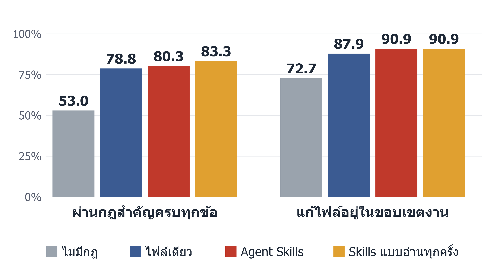

ในกฎเรื่องใบแจ้งหนี้ย้อนหลัง AI ที่ไม่มีกฎพลาด 18 จาก 72 ครั้ง เกือบทั้งหมดคือไม่เช็กหรือไม่บอก
กลุ่มที่มีกฎพลาดไม่เกิน 2 ครั้ง
ข้อนี้ไม่ใช่คำถามหลัก ยังแยกไม่ได้ว่าดีขึ้นเพราะเนื้อหาของกฎหรือเพราะมีข้อความให้อ่านมากขึ้น และกลุ่มไม่มีกฎถูกตรวจด้วยกฎของโปรเจกต์ที่ไม่เคยได้รับ (ตารางที่ 14 และ 16 ในเล่ม)